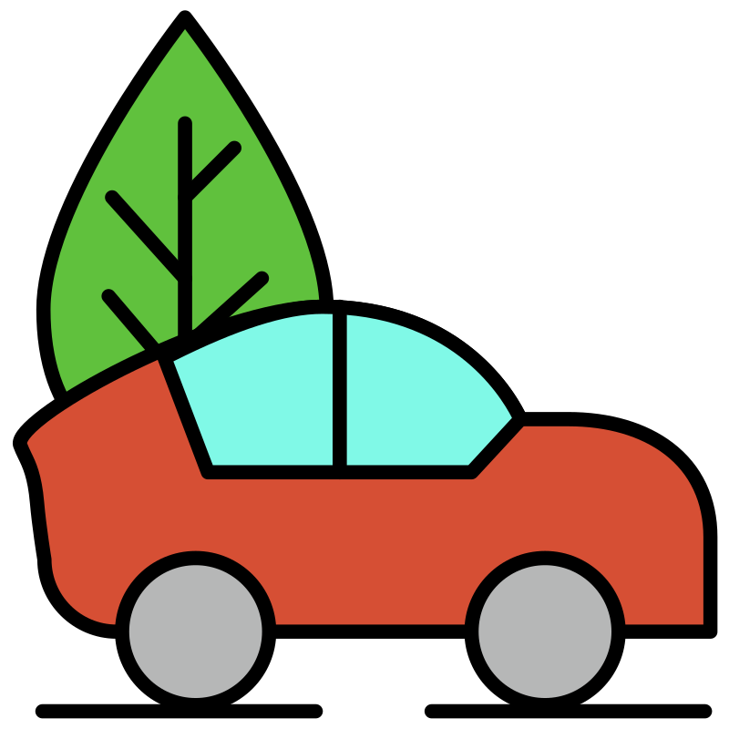

Votre site comparateur de transport en commun
Comparez les opérateurs RATP, TCL et RTM selon des indicateurs écologiques : émissions de CO₂, consommation énergétique, part de véhicules propres et taux de remplissage. Le score global est une note sur 100.
• Émissions CO₂ : kg de CO₂ par km
• Consommation énergétique : kWh par km
• Véhicules propres (%) : part de véhicules électriques / hybrides
• Taux de remplissage (%) : moyenne d’occupation
| Indicateurs écologiques | RATP | TCL | RTM |
|---|